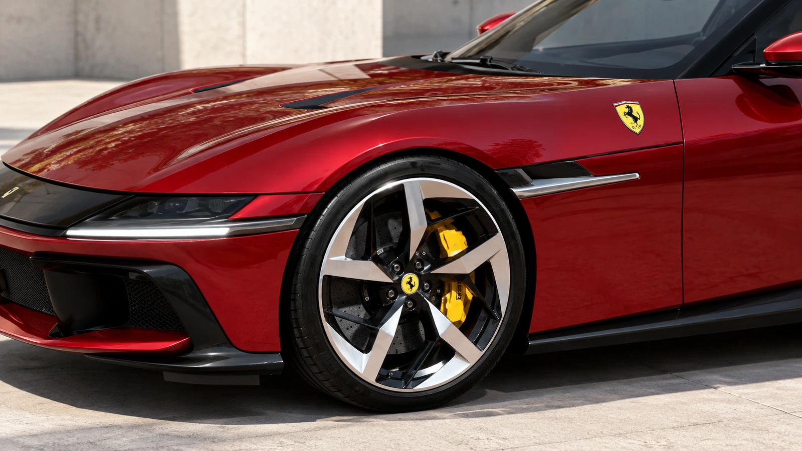
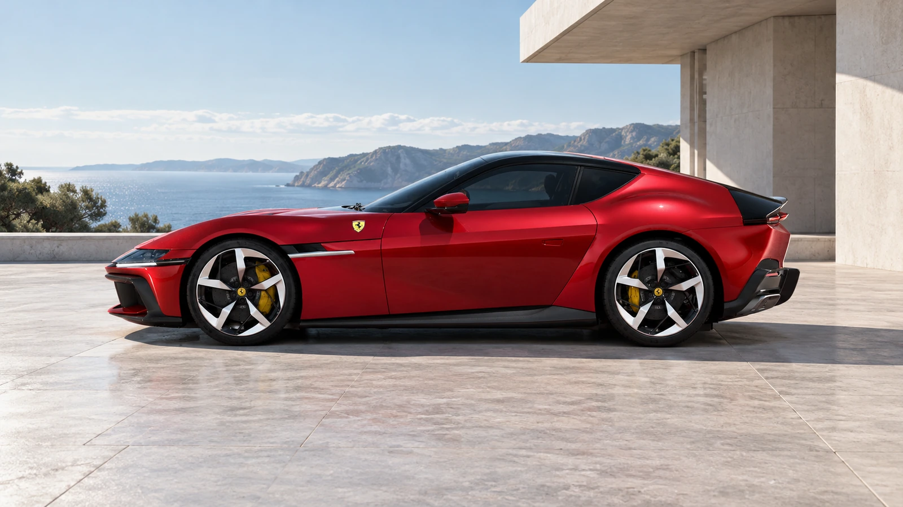

Three answers to the same question
A naturally aspirated V12 is an engineering choice, not a guarantee of a particular kind of car. Ferrari puts one at the front of a two-seat grand tourer. Lamborghini combines one with electric motors in a mid-engined hybrid. Gordon Murray Automotive builds its lightweight flagship around one and a manual transmission. The common cylinder count conceals very different priorities.
Naturally aspirated means the combustion engine draws its intake air without a turbocharger or supercharger. It does not mean the complete vehicle must operate without electrification. Keeping those definitions separate makes the contemporary V12 story much easier to understand.
Ferrari: the front-engine interpretation
The 12Cilindri uses a 6.5-liter naturally aspirated V12 with a maximum engine speed of 9,500 rpm. Its official description presents the engine as central to the car’s identity, rather than treating it as an interchangeable source of a headline power figure.
A high rev limit alone cannot describe the driving experience. Gear ratios, throttle calibration, sound insulation and the way the transmission responds all matter. The specification establishes the architecture; a road test must establish what the driver actually feels. This article examines the published engineering, rather than claiming a drive we have not undertaken.

Lamborghini: aspiration and electrification coexist
The Revuelto pairs a 6.5-liter naturally aspirated V12 with three electric motors. Lamborghini quotes 1,015 CV for the complete system. That is a combined manufacturer figure, not a claim that the combustion engine produces the total by itself.
This architecture answers a different problem from Ferrari’s. Electric assistance can contribute torque while the combustion engine retains its own breathing and revving characteristics. The interesting questions are how the sources of power cooperate, how assistance changes with battery state and how consistently the car delivers its performance.
Calling the Revuelto an exception to the naturally aspirated V12 story would miss the point. The engine and the vehicle are different levels of description. A hybrid can preserve this engine layout while using electricity elsewhere in the powertrain.
Gordon Murray: make the engine serve the whole car
The T.50 takes another route. Its Cosworth-GMA V12 is described as 3.9 liters, with a 12,100-rpm limit. A six-speed manual transmission and a central driving position form part of the same design brief.
Here the useful comparison is not simply maximum power. It is the relationship between engine size, vehicle mass, control layout and the driver’s work. Choosing a manual gearbox commits the car to a different interaction from the automated transmissions in the other two examples.

Choose the evidence before the conclusion
These manufacturers are not interchangeable small private workshops, and their cars are not interchangeable investment propositions. Availability, market approval, servicing and allocation need checking for a specific buyer and country. A striking engine specification does not promise that a car is available to order locally.
Nor does rarity settle future resale value. The strongest reason to examine these V12s is the range of engineering choices they preserve. Cylinder count starts the conversation. The packaging, transmission and surrounding systems explain why each manufacturer still considers it useful.
Sources & image references
Updated October 13, 2026. Original analysis; factual references are listed below. They do not depict the other models discussed.
Keep exploring